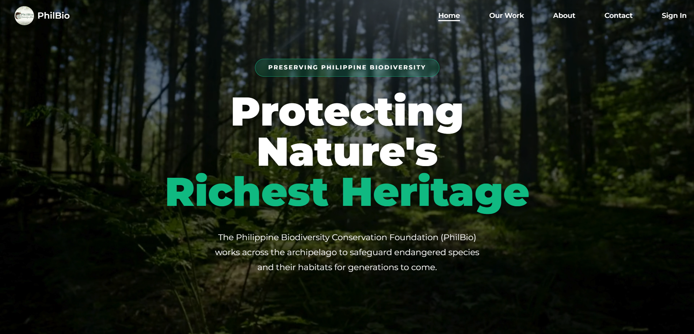
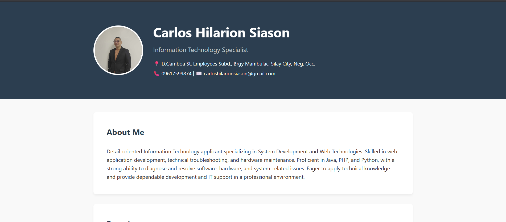

About Me
Detail-oriented Information Technology applicant specializing in System Development and Web Technologies. Skilled in web application development, technical troubleshooting, and hardware maintenance. Proficient in Java, PHP, and Python, with a strong ability to diagnose and resolve software, hardware, and system-related issues. Eager to apply technical knowledge and provide dependable development and IT support in a professional environment.
Experience
Philippine Biodiversity Conservation Foundation Inc.
2026Developed a centralized web-based platform for managing and displaying departmental reports during a 486-hour On-the-Job Training program. The system streamlined data accessibility, improved report organization, and enhanced information management processes. Utilized PHP and MySQL for backend development, database management, and system implementation.
Capstone Project Manager and Developer
2025 - 2026Spearheaded the design and development of a web-based application for storing and managing unpublished research outputs. Applied Agile development methodologies to plan and manage development sprints, Developed the application using PHP and MySQL, implementing database-driven functionalities and an efficient research management workflow.
Projects

Philippine Biodiversity Conservation Foundation Inc. Website
Technologies: PHP Framework (Codeigniter), MySQL, Cpanel, Git, Github
View LiveDigital Research Management and Monitoring System
Technologies: PHP, MySQL, Github, Hostinger

Battle Shapes
Technologies: Python, Pygame

Certifications & Seminars
Google I/O Extended
Google Developer Group Bacolod | 2025Completed training on the application of Artificial Intelligence in modern web development. Acquired practical knowledge in leveraging AI technologies and utilizing Google Firebase for building scalable web applications, including user authentication, cloud storage, and real-time database integration.
Education
STI West Negros University
Bachelor of Science in Information Technology | 2022 - 2026Gained essential knowledge in software and web development, database management, system integration, and networking. Developed strong foundations in programming languages such as Java, PHP, MySQL, and Python.
Skills
Programming
- Java (OOP)
- React Native
- Firebase
- Python
Web Technologies
- PHP
- CSS / HTML / JavaScript
- MySQL / PHPMyadmin
- Firebase/Firestore
- Bootstrap
- Codeigniter/Laravel Framework
- XAMPP
Methodologies & Applied
- Agile Methodology
- Project Management
- Database Management
- Tech Support & Networking
- Hardware Servicing